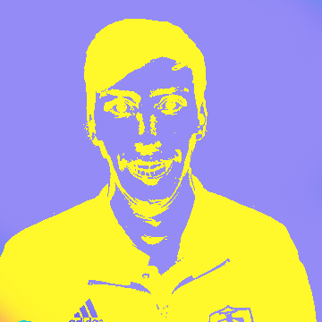
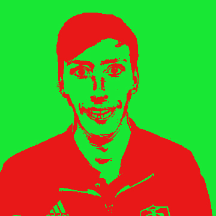

Pop art is an art movement that emerged in the United Kingdom and the United States during the mid- to late-1950s. The movement presented a challenge to traditions of fine art by including imagery from popular and mass culture, such as advertising, comic books and mundane cultural objects. One of its aims is to use images of popular (as opposed to elitist) culture in art, emphasizing the banal or kitschy elements of any culture, most often through the use of irony. It is also associated with the artists' use of mechanical means of reproduction or rendering techniques. In pop art, material is sometimes visually removed from its known context, isolated, or combined with unrelated material.